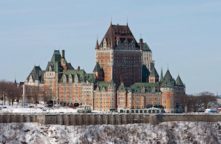
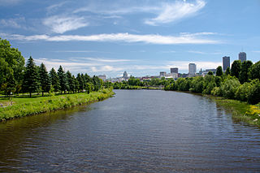
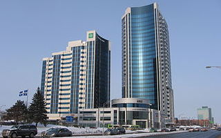
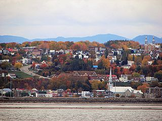
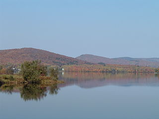

Expansion in Quebec City
Quebec City, Canada has a long history of municipal mergers behind the boroughs (also called arrondissements) that exist today.
Click through this brief timeline to see and read about the city's transformations over the years.
Pre-1909
Originally, Quebec City was divided into two sectors: Basse-Ville (Lower Town) and Haute-Ville (Upper Town). As the names suggest, this division was based primarily on the city's main geographical feature: a promontory overlooking the St. Lawrence River.
The surrounding towns and parishes were politically distinct from the city, similar to most suburbs' relationships with cities in the US.
1909—1969
A neighboring town named Limoilou was incorporated into the city in 1909, marking the beginning of Quebec City's trend of amalgamation. At the time of the merger, Limoilou had just started becoming urbanized within the past couple of decades.
1970—2001
In 1970, an administrative division for the Quebec City area called Communauté urbaine de Québec (CUQ) was created. The CUQ added a new sector to Quebec City called Les Rivières by merging four nearby towns.
During the 1970s, several of the surrounding towns were merged into each other as well—some of which would later become boroughs within Quebec City.
2002—2005
In 2002, as part of a controversial mass municipal reorganization in the province, Quebec City was formed from the merger of the following nearby towns:
- Beauport
- Cap-Rouge
- Charlesbourg
- L'Ancienne-Lorette
- Lac-Saint-Charles
- Loretteville
- Québec
- Saint-Augustin-de-Desmaures
- Saint-Émile
- Sainte-Foy
- Sillery
- Val-Bélair
- Vanier
2006—2009
After the 2002 merger, L'Ancienne-Lorette and Saint-Augustin-de-Desmaures voted in 2004 to de-merge from the city and become independent again. They formally separated in 2006.
2009—present
In 2009, La Cité and Limoilou merged into the borough La Cité-Limoilou, and Laurentian was divided between the boroughs Sainte-Foy–Sillery–Cap-Rouge and La Haute-Saint-Charles.
Hover over the boroughs to learn more about them.
La Cité-Limoilou

This is the central and most historic borough of Quebec City. It was formed from the merger of the former boroughs La Cité and Limoilou in 2009. More than one in five residents live here. The port, the Château Frontenac, and many other historic landmarks are located in La Cité, which was the original city before the other boroughs were annexed.
Les Rivières

This borough was named for the Saint-Charles River and its tributaries which run through the borough. The borough was formed in 2002 from four towns that were annexed by the city in the 1970s.
Sainte-Foy–Sillery–Cap-Rouge

Sainte-Foy–Sillery–Cap-Rouge was formed by several mergers of the former towns of Sainte-Foy, Sillery, and Cap-Rouge. Sainte-Foy is a major economic area of the city, while Sillery and Cap-Rouge are more quiet and historic. It became part of Quebec City in 2009.
Charlesbourg
Charlesbourg was founded as a Jesuit colony in 1659. It had a very unique spatial model during colonial times: the town was centered on the cathedral, and lots were drawn in triangles radiating from it. This aided in defense and increased neighborly proximity. It was annexed by Quebec City in 2002.
Beauport

Beauport, one of the earliest European settlements in Canada, was founded in 1634. It merged with six other nearby towns in the 1970s, and was annexed by Quebec City in 2002.
La Haute-Saint-Charles

This borough was created in 2002 when Quebec City annexed five nearby towns. It was named for the Lake Saint-Charles, the source of the Saint-Charles River. It supplies half of the city's drinking water.